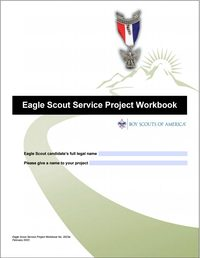

Eagle Scout Project Proposal: Digital Optimization Guide

The Eagle Scout Service Project Workbook is a comprehensive tool, but it can become difficult to manage and share via email if the file size becomes too large. Follow these steps to ensure your proposal is professional, concise, and easy for your reviewers to open.
1. Extracting the Proposal
You do not need to send the entire instruction manual to your reviewers. Focus on the core proposal pages.
- Target Pages: Extract only Page 7 through Page 15 of the Scouting America Workbook.
- How to do it: Open the Workbook in a PDF viewer (like Adobe Acrobat, Preview, or PDF Gear).
- Select Print, but change the printer destination to "Save as PDF" or "Microsoft Print to PDF".
- Under "Pages," select 7-15.
- Save this as your "Working Proposal".
Check your Working Proposal page by page. The workbook's answer boxes scroll; when printed, a long answer can be cut off at the edge of its box.
2. Optimizing Images (Before You Paste!)
The biggest cause of "bloated" files is high-resolution smartphone photos. A single photo can be 10MB, but for a PDF proposal, it only needs to be a fraction of that.
- Shrink Before Merging: Lower the resolution of your photos before adding them to your document.
- Crop for Clarity: Remove unnecessary backgrounds. If you are showing a specific repair area, crop the photo so the focus is clear.
- Recommended Settings: Aim for a resolution of 72 to 150 DPI (dots per inch).
- A single image should ideally be between 100 KB and 200 KB.
- Why? Shrinking images beforehand can keep your final document under 1.5 MB, whereas using raw photos can result in files over 30 MB—too large for many email servers.
3. Appending and Merging Documentation
Since the text fields in the workbook are often too small for detailed sketches or "before" photos, you should create an "Addendum" document.
- Create the Addendum: Put all your photos, maps, and sketches into a Word or Google Doc and save it as a PDF.
- Merge the Files: Use a PDF editor (like PDF Gear) to merge your 7-page Proposal with your Addendum PDF.
- Final Compression: Once merged, run a "Final Compression" on the whole document to catch any remaining bulk.
Addendum: Handling Physical Signature Pages
If you are required to print the signature page (Page 15) for a physical "wet" signature, follow these steps to keep your digital file clean:
- Scan the Signed Page: Scan only Page 15 as a PDF (not a JPEG).
- Replace the Page: Open your digital Proposal PDF.
- Delete the blank Page 15.
- Insert your scanned, signed Page 15 in its place.
- Check Alignment: Ensure the scanned page is right-side up and legible before sending it to the District representative for the final review.
Signed on separate copies? Sometimes each person signs their own copy of the signature page. That's OK: include every signed copy, so that together they show all the required signatures.
Pro-Tip: Generally, email limits are between 10 to 15 MBs. Keeping your proposal around 2-4 MB ensures it arrives safely in every reviewer's inbox. This site accepts files up to 20 MB each.